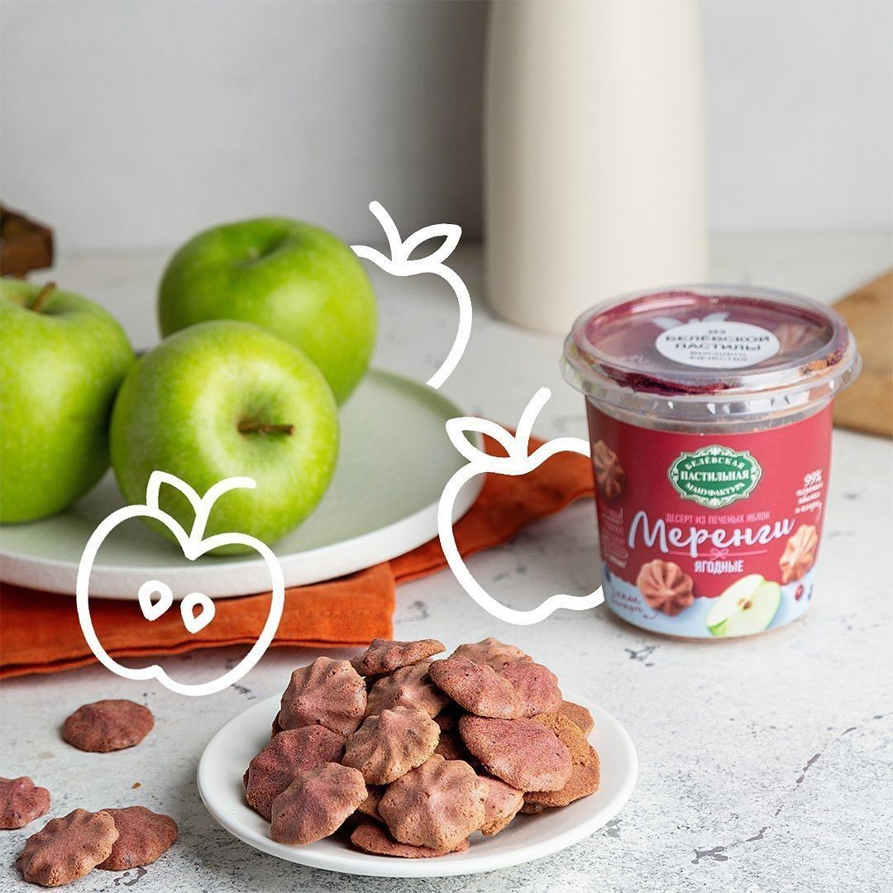
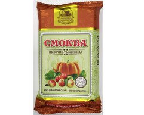
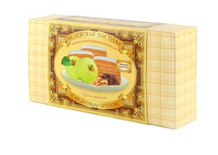
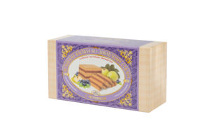
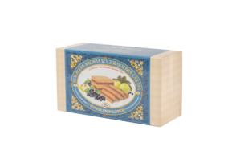

Белёвская пастила классическая без добавления сахара
100 гяблоки, яичный белок
Белки4,0 г
Углеводы65,0 г
Энергия276 ккал
В белёвской пастиле без добавления сахара всего два ингредиента: печёная антоновка и яичный белок. Яблоки печём сами, пюре не покупаем.
Пастила без сахараЧитать состав

Переверните коробку. Никаких загустителей и ароматизаторов в пастиле: яблоки, ягоды, белок. Сладость даёт само яблоко.


Все яблоки покупаем в России, в основном в соседних областях. Поставщики закладывают урожай специально для нас, поэтому пастилу из свежих яблок делаем круглый год.
Сахар только природный, из самих яблок и ягод. Состав на каждой карточке, как на упаковке.



В яблоке есть пектин и клетчатка. Поэтому из него и получается пастила без загустителей.
Весь каталогКонцепт 3 из 7. Составы и калорийность взяты с карточек pastila1881.com, факты о сырье – из интервью руководителя производства.